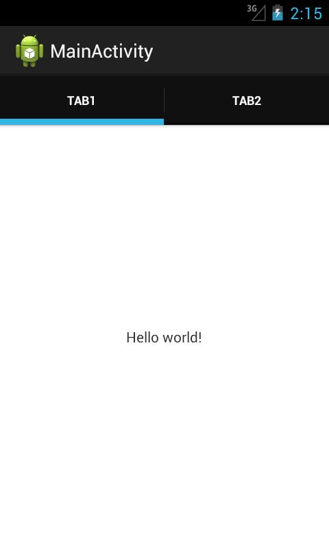
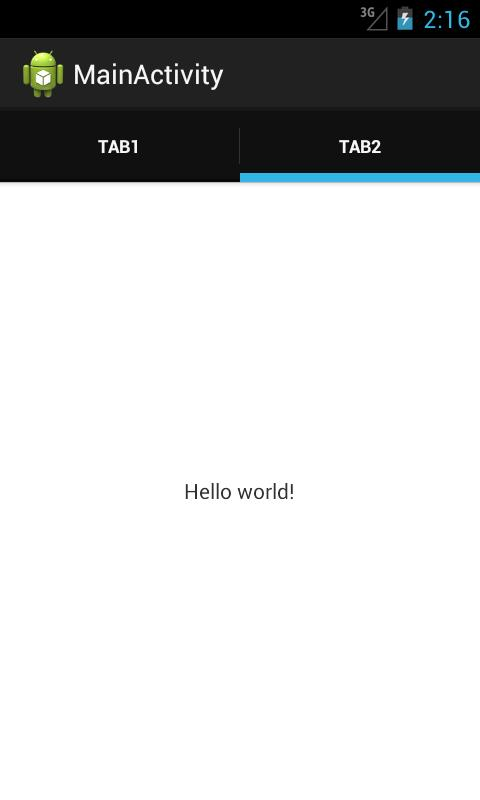
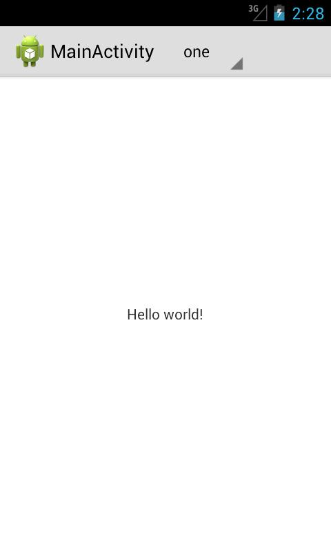
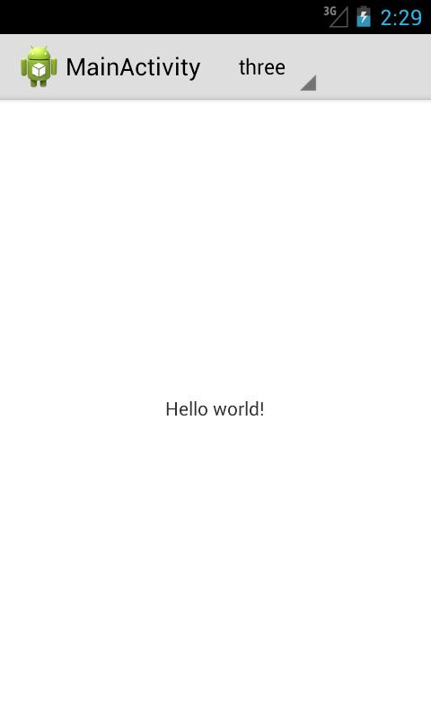
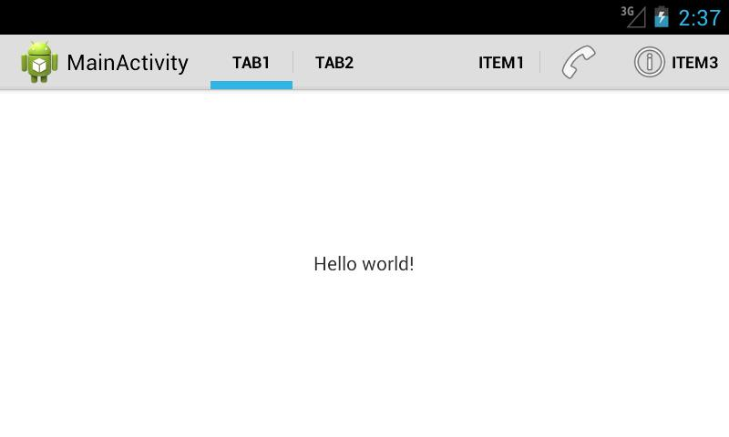
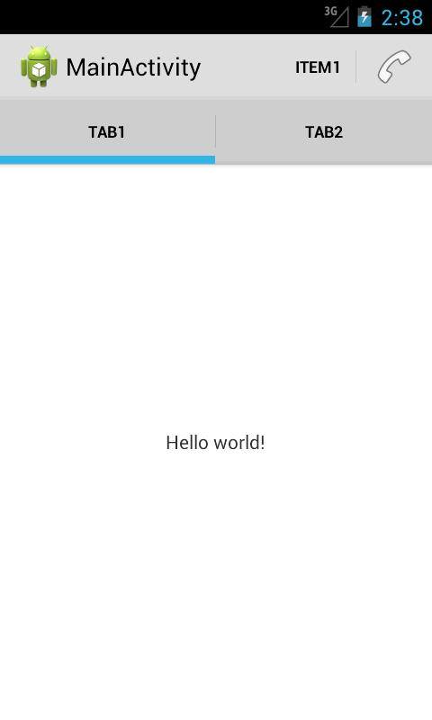
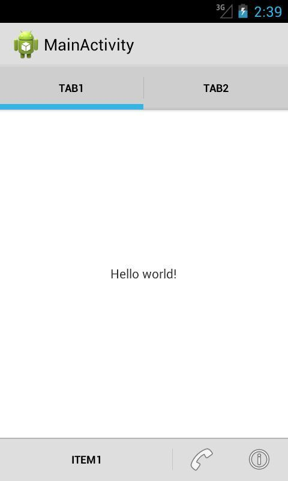

В этом уроке:
- используем навигацию в ActionBar
На прошлом уроке мы рассмотрели добавление элементов ActionBar. Пользователю эти элементы удобно использовать для совершения каких-либо операций в приложении. Например, в почтовой программе это может быть удаление письма, пересылка, ответ и т.д.
Теперь рассмотрим, как добавить элементы для навигации по приложению. Есть два типа элементов для навигации: табы и выпадающий список. Создадим простое приложение и реализуем в нем сначала один, затем второй способ.
Создадим проект:
Project name: P1081_ActionBarNavigation
Build Target: Android 4.1
Application name: ActionBarItems
Package name: ru.startandroid.develop.p1081actionbarnavigation
Create Activity: MainActivity
Никакие строки не добавляем, основной layout не трогаем.
Табы
Кодим MainActivity.java:
package ru.startandroid.develop.p1081actionbarnavigation;
import android.app.ActionBar;
import android.app.ActionBar.Tab;
import android.app.Activity;
import android.app.FragmentTransaction;
import android.os.Bundle;
import android.util.Log;
public class MainActivity extends Activity implements ActionBar.TabListener {
final String LOG_TAG = "myLogs";
@Override
public void onCreate(Bundle savedInstanceState) {
super.onCreate(savedInstanceState);
setContentView(R.layout.main);
ActionBar bar = getActionBar();
bar.setNavigationMode(ActionBar.NAVIGATION_MODE_TABS);
Tab tab = bar.newTab();
tab.setText("tab1");
tab.setTabListener(this);
bar.addTab(tab);
tab = bar.newTab();
tab.setText("tab2");
tab.setTabListener(this);
bar.addTab(tab);
}
@Override
public void onTabReselected(Tab tab, FragmentTransaction ft) {
Log.d(LOG_TAG, "reselected tab: " + tab.getText());
}
@Override
public void onTabSelected(Tab tab, FragmentTransaction ft) {
Log.d(LOG_TAG, "selected tab: " + tab.getText());
}
@Override
public void onTabUnselected(Tab tab, FragmentTransaction ft) {
Log.d(LOG_TAG, "unselected tab: " + tab.getText());
}
}Смотрим, что нам нужно, чтобы включить табы.
В onCreate мы получаем доступ к ActionBar и устанавливаем для него режим навигации в NAVIGATION_MODE_TABS. Далее идет добавление табов. Тут все несложно – создаем, пишем текст, присваиваем обработчика, добавляем в ActionBar.
Обработчиком для табов мы сделали MainActivity, оно реализует методы интерфейса ActionBar.TabListener:
onTabReselected – выбран уже выбранный таб
onTabSelected – таб выбран
onTabUnselected – таб более не выбран
В эти методы поместим запись в лог и посмотрим, как оно все там работает.
Все сохраняем и запускаем приложение.
Видим табы

Сейчас выбран первый таб и лог сразу об этом сообщает:
selected tab: tab1
Нажмем на второй таб,

смотрим логи:
unselected tab: tab1
selected tab: tab2
Первый таб «развыбран», а второй выбран.
Еще раз нажмем на второй таб:
reselected tab: tab2
Второй таб перевыбран. Все логично и понятно.
Я, чтобы не перегружать урок, не стал реализовывать какие-либо операции по навигации в приложении. А, вообще, подразумевается, что в методах обработчика мы кодим операции с фрагментами. Нам даже любезно предоставляют объект FragmentTransaction для этих целей. При этом документация предупреждает, что в этих методах нам не надо самим вызывать метод commit, а также мы не можем добавлять транзакцию в BackStack.
Выпадающий список
Теперь посмотрим, как работает навигация с выпадающим списком.
Перепишем MainActivity.java:
package ru.startandroid.develop.p1081actionbarnavigation;
import android.app.ActionBar;
import android.app.Activity;
import android.os.Bundle;
import android.util.Log;
import android.widget.ArrayAdapter;
public class MainActivity extends Activity implements
ActionBar.OnNavigationListener {
String[] data = new String[] { "one", "two", "three" };
final String LOG_TAG = "myLogs";
@Override
public void onCreate(Bundle savedInstanceState) {
super.onCreate(savedInstanceState);
setContentView(R.layout.main);
ActionBar bar = getActionBar();
bar.setNavigationMode(ActionBar.NAVIGATION_MODE_LIST);
ArrayAdapter<String> adapter = new ArrayAdapter<String>(this,
android.R.layout.simple_spinner_item, data);
adapter.setDropDownViewResource(android.R.layout.simple_spinner_dropdown_item);
bar.setListNavigationCallbacks(adapter, this);
}
@Override
public boolean onNavigationItemSelected(int itemPosition, long itemId) {
Log.d(LOG_TAG, "selected: position = " + itemPosition + ", id = "
+ itemId + ", " + data[itemPosition]);
return false;
}
}В onCreate получаем ActionBar и включаем ему режим навигации NAVIGATION_MODE_LIST. Для выпадающего списка необходимо создать адаптер, реализующий SpinnerAdapter. Пусть это будет ArrayAdapter. При создании используем массив из трех строк. Далее вызываем метод setListNavigationCallbacks, в который передаем адаптер и обработчик.
Обработчиком у нас снова является Activity, реализует метод onNavigationItemSelected интерфейса ActionBar.OnNavigationListener. Этот метод дает нам позицию и id выбранного из списка элемента. Выводим в лог эту инфу и соответствующий элемент массива.
В манифесте я прописал для MainActivity атрибут темы: android:theme="@android:style/Theme.Holo.Light". Иначе был темный текст на темном фоне.
Все сохраняем и запускаем.

Первый элемент сразу выбран. В логах видим:
selected: position = 0, id = 0, one
Выберем какой-нить другой элемент из списка

В логах:
selected: position = 2, id = 2, three
Снова все логично и понятно.
Для обоих видов навигации мы всегда можем получить текущий выбранный элемент с помощью метода getSelectedNavigationIndex. А для навигации с табами есть также метод getSelectedTab, возвращающий текущий выбранный таб.
Разумеется, что вместе с навигацией мы можем добавлять в ActionBar и обычные элементы, которые были рассмотрены на прошлом уроке.

При этом, если места будет недостаточно, то ActionBar разделит все свои элементы на две полосы.

Начиная с четвертой версии Андроид, можно использовать атрибут uiOptions для Activity или Application в манифесте. Если присвоить ему значение splitActionBarWhenNarrow, то результат при нехватке места получится такой:

Элементы ушли вниз. Правда, при этом почему-то перестает работать withText в showAsAction.